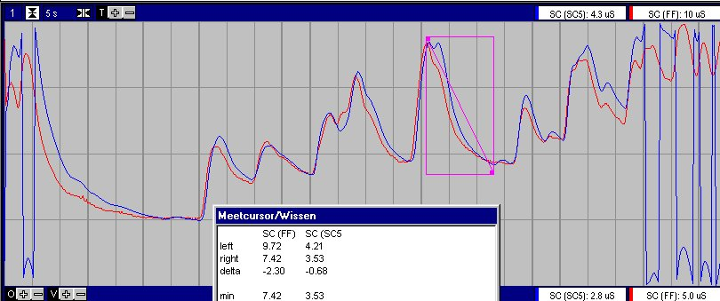
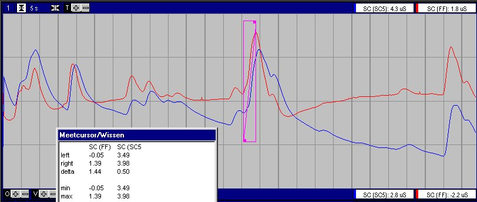
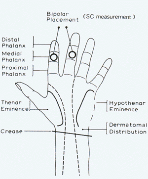

Inleiding 
Er wordt eigenlijk nooit de huidweerstand gemeten maar enkel de reciproke
waarde hiervan oftewel de huidgeleiding (Skin Conductance = SC), uitgedrukt
in de eenheid Siemen.
In het algemeen wordt verondersteld dat de SC bestaat uit twee te onderscheiden
componenten:
-
Skin Conductance Respons (SCR), relatief snelle positieve transients naar
een hogere waarde, waarbij de opgaande flank steiler is dan de neergaande
flank. Deze worden ook wel phasic component genoemd. Deze responses
kunnen zowel spontaan als gestimuleerd optreden.
-
Skin Conductance Level (SCL), de langzame verandering van het basale nivo,
ook wel tonische component genoemd.
It's assumed that the sympathetic nervous system,
controls the sweet glands and therefor the SC.
Others suggest correlation between the cardio-vascular system (which
ofcourse is also affected by the sympathetic nerve system) and SC.
Het FysioFlex systeem is in staat middels de standaard ExG versterker
en een eenvoudige interface kabel SC te meten.
Meetprincipe
Het meest gebruikt is de methode voor het meten van de SC is de constante
spanningsmethode (Venables en Lykken), waarbij een DC spanning van 0.5
Volt wordt aangelegd over de electroden. Deze methode wordt ook gebruikt
in de FysioFlex.
Andere methoden zijn constante DC stroom en laagfrequente (<100
Hz) AC spanning en stroom.
Specificaties
| SCL+SCR (DC-measurement) |
ExG in 20 mVtt / DC |
Meetmethode
MeetBereik
Resolutie
Nauwkeurigheid
High Frequency Cutoff |
constant DC 0.5Volt
0 ... 100 uS
0.025 uS
0.025 uS
..software |
| SCR only (AC-measurement) |
ExG in 2 mVtt / AC-10sec |
Meetmethode
MeetBereik (delta SC)
Resolutie
Nauwkeurigheid
Low Frequency cutoff
High Frequency cutoff |
constant DC 0.5Volt
-5 ... +5 uS
0.0025 uS
0.0025 uS
..
.. |
Vergelijking
FysioFlex en SC5
Voor een vergelijking wordt met de SC5 met de bijgeleverde electroden
op de linkerhand gemeten en met de FysioFlex op de rechterhand.
Bij de SC5 zijn electrode geleverd met een diameter van 10 mm (volgens
de fabrikant Ag/AgCl, ik vond dat ze wel heel erg glimde voor Ag/AgCl)
bij FysioFlex standaard Ag/AgCl electroden van 6 mm doorsnede. In beide
gevallen is gebruik gemaakt van 0.05 M NaCl pasta. Er is geen gebruik gemaakt
van dubbelzijdige plakkers, fixatie met tape was dusdanig goed, dat duwen
en trekken aan de electrode geen artefacten te zien gaf.
Hieronder een opname bij een medewerker van de afdeling Psychiatrie,
waarbij de SCR het gevolg zijn van de antwoorden op alledaagse vragen.
Opmerkelijk is dat de FysioFlex een 4 maal hoger signaal laat zien, terwijl
de electroden 3 maal kleiner zijn. Het bovenste plaatje is met de FysioFlex
in de DC stand, het onderste plaatje is met de FysioFlec in de AC-stand.


Electrodes
| In het algemeen worden gewone Ag/AgCl cups gebruikt, in een enkel geval
droge goud-electroden.
Als geleidingspasta wordt gebruik gemaakt van K-Y Jelly, 0.5% KCl, 0.05
M NaCl. Het belangrijkste hierbij schijnt te zijn dat de pasta neutraal
t.o.v. de huid (in het bijzonder de zweetklieren) moet zijn.
De aanbevolen bevestiging is dubbelzijdige stikker met gat, vullen met
pasta, vastplakken, totaal fixeren met tape, kabels extra fixeren.
Indien de dubbelzijdige stickers worden weggelaten, hoeft de pasta
niet zo nauwkeurig aangebracht te worden en de eerste resultaten leken
erg goed.
Na bevestiging dient minimaal 10 minuten (voor absolute metingen 20
minuten) gewacht te worden om een stabiele uitlezing te verkrijgen. |
 |
Benamingen
en afkortingen
| SC |
Skin Conductance = SCR + SCL |
| SCR |
Skin Conductance Respons = snelle positive transients = fazische component |
| SCL |
Skin Conductance Level = basaal nivo = tonische component |
|
|
| EDA |
ElectroDermal Activity |
|
|
| GSR |
Galvanic Skin Respons |
|
|
|
|
|
|
Informatie
op Internet
De volgende onderzoekers worden telkens weer aangehaald
Venables, P.H.
Lykken, D.T.
Fowles, D.C.
Edelberg, R.
Martin Schiller
"Grundlagen
der Elektrodermalen Aktivitä"
Degelijke uitleg over EDA en algoritme voor het onderscheiden van spontane
SCR en gestimuleerde SCR
Westmead Hospital, Westmead NSW 2145, Australia
SCORES
is a new software package to analyse electrodermal activity (reflecting
arousal and orienting). Overlapping skin
conductance responses (SCR) and quantification of skin conductance
level (SCL) is automatically achieved.
Nichele Allen-Cauthen
An
Evaluation of Three Hydrophylic Ointments in Skin Conductance Monitoring
NASA Langley Research
Center
Overzicht parameters, met voor en nadelen
Michael Gasperi
Galvanic Skin
Response with Lego Mindstorms
Peter Shepherd
"The Biofeedback
Monitor"
psycho-galvanometer (met poging tot onderbouwing), The
Ability Meter 3a
Nokon Heo
Source
Perception and Electrodermal Activity
RJL Systems
"Bioelectrical
Impedance Science"
Weliswaar spectraal analyse, maar bevat enkele zeer fundamentele basisverkleringen
The Oslo Bioimpedance Group
Zeer deskundige groep, een hoop klikbare referenties
Apparatuur
Galvanic Skin Response Measurement Devices, Draft
Guidance For 510(K)
Psylab, in het bijzonder de SC5
UFI
Affective
Computing (MIT media laoratory) or more
general or Affective
Jewelry
NeuroDyne Medical
Autogenetic AT64
Coulbourn
© Copyright Instrumentele Dienst, 2001
SM, last updated 04-07-2001